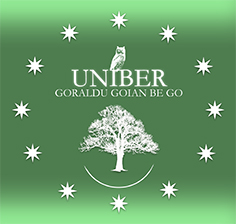
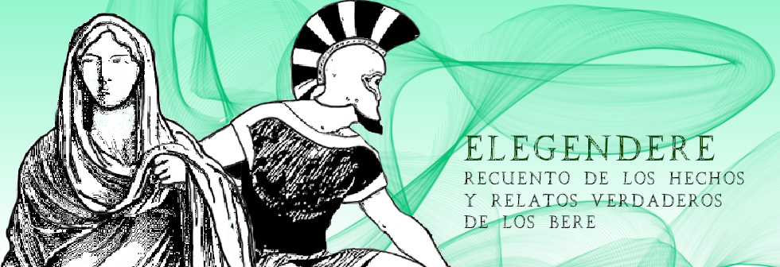
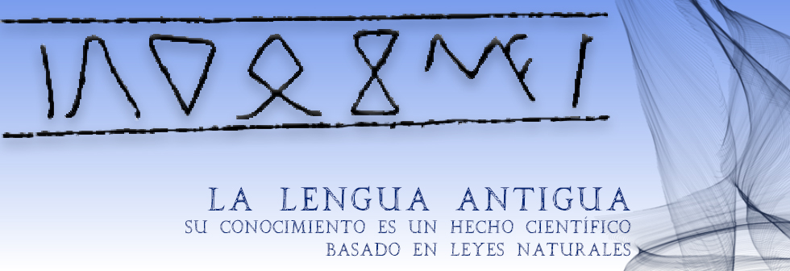
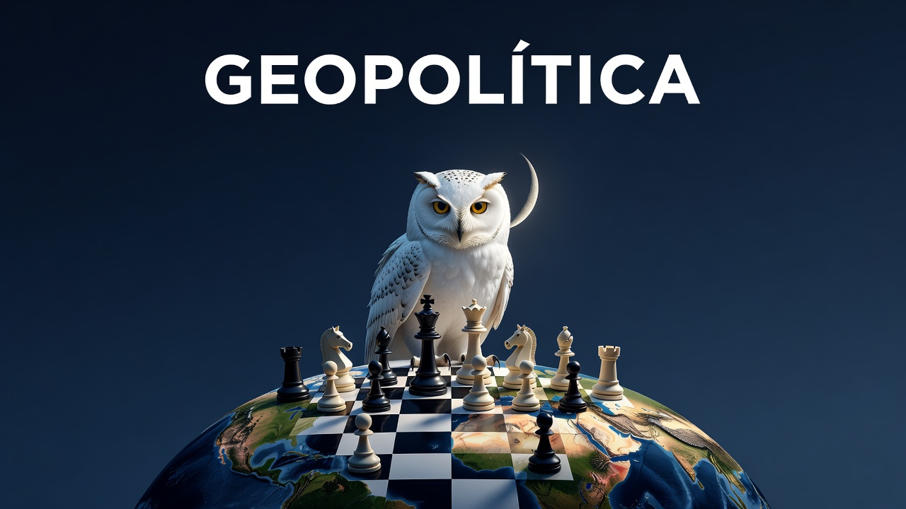

Tema original
La llamada de los Bere
A pesar de que la lógica conceptual de la historia moderna como garante de la investigación científica y guardiana de la investigación ortodoxa de las leyendas más conocidas indique lo contrario, muchos de los que habrían de convertirse en los antiguos Íberos participaron en la batalla más famosa de los tiempos antiguos y en realidad de toda la historia: TROYA.
Denominada la Guerra de los Trece años, Troia o Turoy significa «es fortaleza del Rey» y, contrariamente a la creencia general, el asedio se produjo en Troyes, ciudad actual del departamento del Aube, en Francia. Gracias a una galería construida bajo el río Zen —llamado ahora Seine— la fortaleza fue tomada desde dentro y después desde el exterior, el 26 de diciembre del año 3589 a.C por las tropas de Dios Alexandre, el Rey Bitureigi y el Rey Dardanos, siendo denominados desde entonces, los Tres Reyes MAGO.
Los famosos hechos de esta gesta fueron escritos por los BEDU y titulada Zaldituroye o Zalditroia «el Lugar de Troya» o el «Asedio de Troya». Años después, los paganos utilizaron la argucia del caballo para confundir la historia, pues Zaldi (asedio) era homónimo de Zaaldi (caballo). Se hizo creer que un caballo gigante de madera con algunos guerreros en su panza fue abandonado después de 10 años de cruentas luchas. Luego introducido por un enemigo hasta ahora irreducible y abandonado sin vigilancia dentro del recinto de las murallas de Troya para que durante la noche aquellos hombres salieran y cogieran a los centinelas por sorpresa, abriendo las puertas del recinto. Pero esta es una historia difícil de creer y aun así, ha pasado a la historia.
— del libro Argi Andi Gure, de Serdaniol
Al nacer ADIBERGEN.NET con el espíritu de divulgar la Historia de Iberia y de esta Tierra llamada antaño UNIBER, desde esta sección, y como homenaje a su figura y a su obra, nos proponemos prioritariamente la divulgación formal y rigurosa de los estudios e investigaciones del sabio e historiógrafo Alexandre Eleazar, el descubridor de la desconocida Historia de la Humanidad y de la Lengua Elengoa, y quien nos ha devuelto con sentido, para los que así lo entendemos, toda la historia antigua del pasado.
Era de esperar que su extraordinaria narración impactara en las mentes modernas produciendo un alivio espiritual retro-histórico en unos, es decir, el retorno de la memoria, pues en el último siglo son muchas las explicaciones y versiones que se han dado sobre episodios de la historia antigua, pero sin interés, aunque también es verdad que éstas suelen cambiar cada tantos años para amoldarse a los tiempos y a las modas que tan rápido nos asedian.
Sin embargo, la historia que nos narra el autor es inmutable, pues su verdad contenida, lejos de quedar convertida en ideas y explicaciones polvorientas en la estantería del olvido, abre la mente a nuevas perspectivas y visiones y nos involucra de lleno en nuestra propia historia, la historia de todos.
Por todo ello, desde esta sección queremos hacer llegar a todos los interesados la posibilidad de intervenir en ADIBERGEN.NET escribiendo artículos o extractos de vuestras investigaciones, es decir, nuevas ideas, caminos y sugerencias históricas y artísticas que profundicen en la percepción y proyección del pasado y que acrecienten el conocimiento de la verdadera historia de los Bere.
Si estás interesado o interesada puedes enviarnos tu artículo a nuestro email y nos pondremos en contacto contigo. Todos los artículos aceptados y que se ajusten a los objetivos de ADIBERGEN.NET tendrán, obviamente, la firma de sus autores.

«La historia es una farsa en la que muchos están de acuerdo».
Voltaire
ADIBERGEN.NET es un proyecto en el cual nos hemos comprometido y que nace con el espíritu y el propósito de divulgar la Historia de Iberia y de esta Tierra llamada antaño UNIBER.
Una buena parte de todo cuanto exponemos del extenso relato de la Historia está fundamentado en los estudios e investigaciones llevados a cabo por el sabio e historiógrafo Alexandre Eleazar, los cuales han sido expuestos en su obra Los Bere. Asimismo, nos basaremos también desde esta sección en la obra de Serdaniol, hijo de A. Eleazar, quien gracias a su esfuerzo y trabajo de investigación realizado a través de sus libros publicados, desarrolla el formidable legado de su padre, continuando y profundizando en la senda que A. Eleazar iniciara respecto a la Historia antigua y a la Lengua Única Elengoa.
Alexandre Eleazar nació en Damasco en 1920 y falleció en Barcelona en diciembre de 2004. Huérfano desde los trece años pasó su infancia y parte de su juventud en Francia. En 1965 y en la ciudad de Barcelona, convencido de que el actual conocimiento sobre los hechos del pasado estaba equivocado, se puso a la tarea de descubrir el secreto de las antiguas escrituras reputadas hasta entonces como indescifrables.
Tras dos años de arduos esfuerzos logra interpretar su primer texto en escritura Ibérica (hasta ese momento tenida como indescifrable por eminentes filólogos e investigadores), valiéndose de la lengua Euskera que resultó ser la más antigua de las habladas en la Tierra. Este primer texto era el conocido con la denominación de «Plomo de la Serreta de Alcoy» hallado en unas investigaciones en 1922. A partir de este desciframiento continuará su incansable labor con otras muchas inscripciones tanto íberas, como etruscas, minoicas, etc., descubriendo, no sin asombro, que todos los vocablos y expresiones empleados en todas ellas pertenecían a una sola y única lengua hablada en la antigüedad que Alexandre denominó el ELENGOA, del cual su pariente lingüístico más cercano aún existiendo en la actualidad es el Euskera.
Alexandre descubrió igualmente que, a partir de esta lengua única primordial, se crearon infinidad de modismos a los cuales tuvo que acudir constantemente. Fue así como, durante dos décadas de agotadora tarea, pudo traducir numerosos textos antiguos obteniendo un gran cúmulo de valiosas informaciones procedentes directamente de reyes, escritores e historiadores que habitaron la península ibérica hace más de 5.000 años. Con los éxitos logrados en el campo de la interpretación de los signos íberos y otros de parecida textura gráfica, decidió aplicar el sistema a los jeroglíficos egipcios comprobando asombrado que funcionaba a la perfección, echando así por tierra las teorías y afirmaciones de Champolion y de otros acerca de la interpretación y traducción de los textos egipcios. Observó que tales teorías estaban equivocadas sobre todo a causa de que los investigadores desconocen el lenguaje hablado por los egipcios, siendo este un modismo o derivación del Elengoa, y por lo tanto más próximo al Euskera que a las ramas lingüísticas semitas o copta. Transcurrido el tiempo de investigaciones, Alexandre se dedicó a la tarea de escribir un libro en el cual condensó su dilatada y fructífera labor. Dicho libro, publicado en Barcelona en el 1985, se titula LOS BERE.
«Para mi gran sorpresa, y desde el principio, descubrí varias cosas muy importantes:
- Que los Hechos de María e Iezus eran muy anteriores al Cristianismo y antes del advenimiento de dicha religión y de la musulmana actual se creía solamente en Dios Creador o Dios Padre (los Paios), en Dios Todopoderoso y en Dios Be (los Bere) y en ningún momento los pueblos antiguos se refirieron a otros Dioses, tal como se pretende ahora.
- Que la mayor parte de los acontecimientos citados en los libros de Historia o no tuvieron nunca lugar o han sido completamente tergiversados, como por ejemplo la actuación de los Romanos en la península Ibérica, todo cuanto se relaciona a Cartago o la guerra de Troia.
- Que nadie antes de mí pudo descifrar correctamente los textos íberos, etruscos, los jeroglíficos egipcios, los de Creta u otros lugares ni la escritura cuneiforme, siendo buena prueba de ello las cuantiosas informaciones facilitadas por aquellas inscripciones que hubieran sido aprovechadas por una infinidad de aventureros, políticos y saqueadores.
- Que la traducción oficial de la mal llamada escritura griega no es correcta.
- Que la interpretación de las piezas arqueológicas, estatuas, relieves, monedas, pinturas, etc. está equivocada.
- Que los griegos, entendiendo como tales gentes los nativos de la nación actualmente llamada Grecia aquí en Europa occidental, no estuvieron nunca en la península Ibérica ni en Italia ni en Francia y por lo tanto no fundaron las ciudades a ellos atribuidas.
- Que la nación más importante de la Antigüedad fue el Imperio Paio, fundador de las principales ciudades actuales o desaparecidas, incluidas cuantas existieron o existen en Grecia, Próximo Oriente e Italia, por citar tan solo tierras reputadas como muy históricas y consideradas creadoras de múltiples ciudades.
— Los Bere, Alexandre Eleazar

Según consta en los Anale Belei o «Anales de los Bere», el Elengoa fue la lengua hablada por nuestros antepasados en épocas remotas y traída de los Cielos por estos. Se desprende por la obra de Eleazar que, de ésta, se originaron otras formas dando resultado a un amplio espectro de variaciones. Pero en el origen, ¿qué hubo antes de la lengua? Contaban en los antiguos tiempos que antes de que el hombre y la mujer existieran, los Padres Aitanos (llamados también Dioses Aitanos), se agitaban deseosos de tener un cuerpo; la materia la ansiaban. Su vida, que se extendía durante cientos de años terrestres, carecía de lo que ellos podían ver y oír a distancia, así mismo hablar sin soporte físico, pero capaces de mover las partículas, vibrar. Un canto imperceptible para el oído, pero no para la inteligencia.
«Aparecieron los humanos que se autodenominaron mucho más tarde los EDU o sea los "propietarios", los cuales crearon una lengua o lenguaje, empleando como primeras vocales los sonidos "AI", "O", "I", "U", "E". Conozco el desarrollo de esta lengua...»
A. Eleazar
Al estudio e investigación del origen, desarrollo y extensión de esta lengua celeste descubierta por el historiógrafo Alexandre Eleazar y que denominó Elengoa, «la Lengua Celeste o de Dios», dedicaremos exclusivamente esta sección.
Efectivamente, y basándonos en las tesis de A. Eleazar, el lenguaje Elengoa tiene un origen celestial, proviniendo en su máxima pureza del EDUEN, la lengua hablada en Baleden y en todos los OROZKAR o en la totalidad de las tierras del Cielo. Así pues, el Elengoa sería una adaptación terrestre del Eduen. El euskera, hablado en la actualidad por unas 700.000 personas, conserva aún un 80% aprox. de las raíces de la lengua única y original.
«El idioma fue deducido de la naturaleza como todas las cosas, pues el ser humano, al constituirse como animal consciente, hace consciencia de algo que ya fue creado con anterioridad. Así, el arte es, en un principio, imitador de las formas naturales, pero hoy se quiere pintar la idea o el alma de las cosas que viene a ser la esencia que forma e integra a la idea. Todo en la naturaleza sigue el proceso de desarrollo de la ciencia, ya que sus conocimientos son un derivado de las leyes naturales, y por ello, la formación de los idiomas es idéntica, y obedece al siguiente hecho: cada ser o ente, constituido como individual, posee un campo magnético y una vibración determinada, que da un sonido o nota determinada, y también, un color. El origen de las lenguas es el intento humano de reproducir ese sonido vibratorio natural».
Imanol Mujika Alberdi, Lingüística vasca
«En el estudio de la historia "etimológica" de todas las palabras de las lenguas se obvia un asunto importante. Siempre se ha separado la definición de la "raíz" con el porqué de su existencia (de eso último poco o nada se ha hablado). Ninguna palabra podría existir sin una solución histórica y cultural, sin su contexto. Serían recursos parciales y posiblemente erróneos, y pongo como ejemplo el consenso de que casi todas las palabras de lenguas románicas proceden del latín y hasta del griego, como si antes las otras lenguas no hubiesen existido. De hecho, el origen del castellano como procedente del latín constituye todo un fraude, aunque de eso muchos se dieron cuenta antes, por supuesto. Que no se rasguen pues las vestiduras aquellos que sólo contemplan como fundamento del castellano la lengua latina, porque creo que hemos olvidado demasiadas cosas sobre nuestros orígenes ibéricos ancestrales».
Serdaniol

En esta sección nos proponemos abordar la geopolítica con el objetivo principal de desvelar y desmontar las malinterpretaciones e inexactitudes de la historiografía oficial, alejado de las lecturas convencionales que reducen los conflictos internacionales a meras coyunturas recientes o a simples disputas económicas y políticas por los recursos. Y así mismo, poder entender cómo y por qué el orden global contemporáneo se sostiene sobre una falsificación histórica masiva y deliberada.
Desde nuestra perspectiva, el análisis convencional padece una falla de origen al diagnosticar únicamente «síntomas falsos» sin tener en cuenta las causas y los verdaderos hechos históricos que han conducido al deplorable estado de nuestra actual civilización. Y queremos llamar la atención a este respecto: que durante los siglos IV al XV de nuestra Era —y desde la proclamación de Constantino en el año 315 d.C. como Jerarca absoluto de la Iglesia de Roma— el poder imperial y eclesial ejecutó una purga sistemática de registros antiguos. A través de la destrucción documental y la reelaboración de los textos «clásicos» grecorromanos, se sepultó la memoria colectiva para imponer una estructura de dominación ideológica. Frente a estas manipulaciones, ocultamientos y tergiversaciones, el trabajo del sabio e historiógrafo Alexandre Eleazar se fundamenta en la traducción de numerosas inscripciones ibéricas, etruscas, minoicas, jeroglíficas y cuneiformes, entre otras (tenidas muchas de ellas hasta entonces como indescifrables), además de manuscritos árabes muy antiguos.
Así pues, y como nos revelan las investigaciones de Alexandre Eleazar, las tensiones actuales no nacieron con la Revolución francesa, la Guerra Fría, ni siquiera en el siglo XX, sino que constituyen el correlato moderno de una guerra secular entre dos facciones ancestrales:
Globalismo
La matriz ideológica del Globalismo contemporáneo: modelos de estructuras de poder piramidales, teocráticas, hipercentralizadas, de ámbito materialista, y la explotación indiscriminada de las naciones, sus gentes y la naturaleza. Heredera de la antigua civilización Paia descrita por Alexandre Eleazar.
Soberanías Nacionales
El sustrato de las Soberanías Nacionales y autonómicas, fundamentado en la descentralización, la autodeterminación local, la vida natural y la protección de la Naturaleza. En ella se potenciaba la verdadera naturaleza espiritual del hombre, prevaleciendo lo eterno sobre lo perecedero, la verdad sobre la mentira, la justicia, la libertad del individuo y el desarrollo de la inteligencia y los buenos sentimientos, por encima del chantaje, la extorsión y la ignorancia. Sus valores se concentraban en la sociedad de los Bere, descritos por el mismo autor.
Los organismos internacionales y alianzas supranacionales del presente son la evolución directa de aquellas antiguas facciones en permanente conflicto, aunque hoy, después de tantos siglos, se hace difícil separar unos de otros.
Desde esta sección contrastaremos la supuesta «democracia» actual, cuyos líderes parecen serviles al dinero y la especulación, a los intereses de las grandes empresas, la banca y los poderes fácticos, olvidando las antiguas enseñanzas de los Bere.
En resumen y como conclusión, desde este espacio no solo tenemos el propósito de impugnar el relato académico imperante, sino de restituir la verdad histórica como un vector de transformación real. Ya que, comprender en profundidad el origen de las civilizaciones —estamos convencidos de ello— nos brindará las herramientas necesarias para analizar lo más objetivamente posible la realidad geopolítica actual, y consecuentemente intentar dar luz a la soberanía y promover la libertad de los pueblos frente a las estructuras autocráticas del presente, y que durante milenios, han promocionado la ignorancia y la manipulación sobre cuestiones fundamentales de la libertad de los pueblos con el fin de entretenerlos y tenerlos bien controlados.
— Adibergen
Nuevos artículos, cada semana
Sigue leyendo en Substack
Elengoa, Arte y Arqueología, Ciencias Naturales, Salud y remedios de la naturaleza — todas las publicaciones nuevas de la comunidad Adibergen viven ahora ahí.
Ir al blog